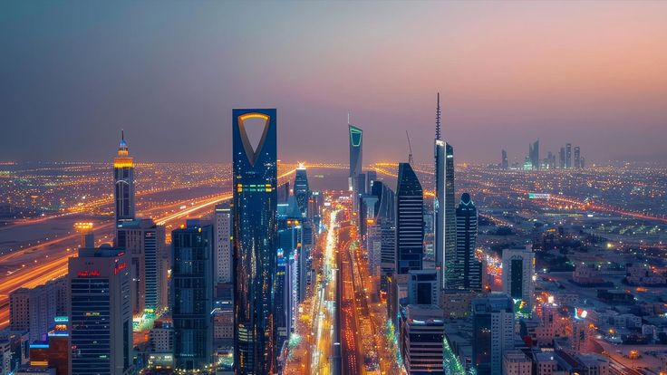

RIYADH ? RELOCATION ? OPPORTUNITY
Saudi Arabia's capital is rapidly transforming into one of the Middle East's most important business, investment and lifestyle destinations.
Riyadh is at the center of Saudi Arabia's economic transformation. As the country's political and financial capital, the city attracts professionals, entrepreneurs, investors and multinational companies from around the world.
Driven by Vision 2030 initiatives, Riyadh continues expanding its business ecosystem, infrastructure and lifestyle offerings.
Riyadh offers a wide variety of residential options ranging from modern apartments and gated compounds to luxury villas and family-oriented communities.
Popular residential areas continue growing as the city expands and new developments are introduced across the capital.
The city has become a major destination for professionals in finance, technology, healthcare, engineering, consulting, construction and government-related sectors.
Many international companies are expanding their presence in Riyadh, creating new opportunities for local and international talent.
Riyadh's transportation network continues to improve through major infrastructure investments, road upgrades and public transportation projects.
The city's growing connectivity supports business growth and improves mobility for residents.
The cost of living varies depending on housing, lifestyle choices and family size. Residents can choose from a range of accommodation and spending options across different areas of the city.
As Riyadh continues to grow, demand for quality housing and services remains strong.
Riyadh has experienced significant changes in recent years, with new entertainment venues, cultural events, restaurants, shopping destinations and leisure attractions.
The city combines modern development with strong cultural traditions, creating a unique living experience.
Entrepreneurs and investors are increasingly looking at Riyadh because of government support, economic diversification and large-scale development projects.
Technology, finance, tourism, logistics and professional services are among the sectors experiencing strong growth.
Riyadh is expected to remain one of the fastest-growing cities in the region as Saudi Arabia continues implementing Vision 2030 initiatives.
Its growing international profile and expanding economy make it an increasingly attractive destination for professionals, businesses and investors.